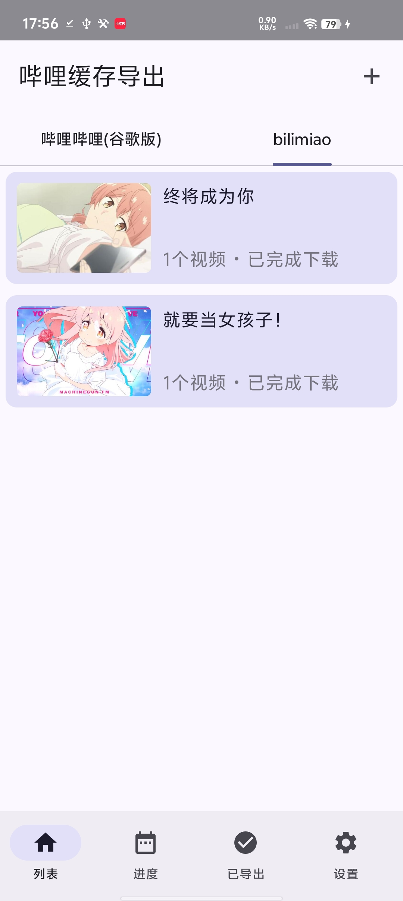
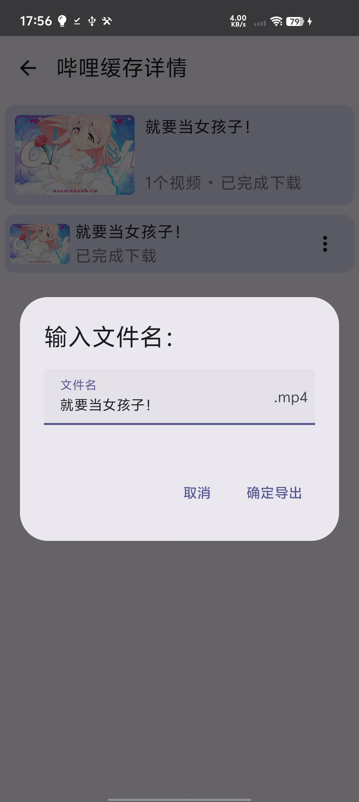
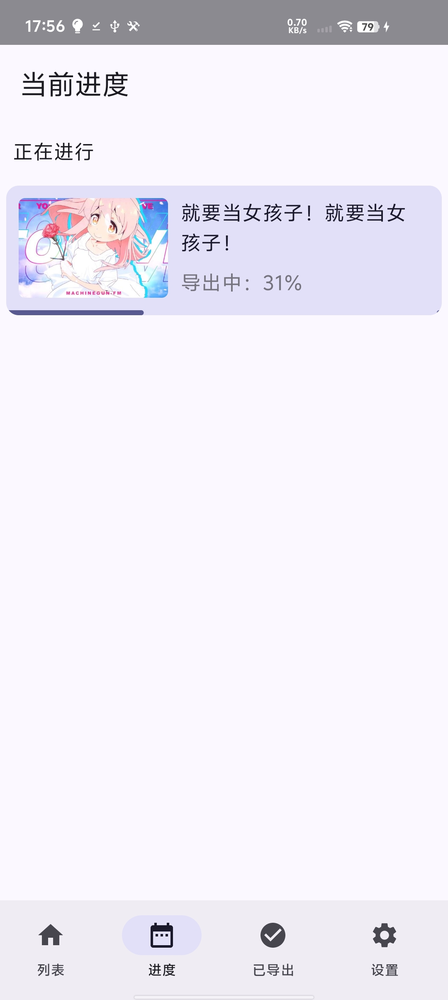

把哔哩哔哩 APP 的离线缓存，整理成能看、能分享的 MP4。按 UP 主归档，番剧单独成组，一眼找到想看的。

缓存多了，列表像一篇没有目录的文章。BiliDownOut 按 UP 主自动分组，带头像、按中文拼音排序——想看谁的视频，点开就是。
不用再在一长串缓存里反复翻找，文件夹即「某位 UP 主」。

动漫和影视没有 UP 主，过去常常被当成“未知 UP 主”丢在角落。现在它们统一归入「番剧·影视」组。
UP 主的内容更干净，追剧的缓存也好找。
按 UP 主拼音、按名称、按大小——想知道哪些缓存最占空间，一键按大小排。
导出记录支持多选和批量删除，一次处理一批，不再一个个点。

读取缓存 entry.json + 分片，拼接重命名为正常可看的视频。
Android 13+ 无需 root，授权 Shizuku 即可访问 Android/data 深处。
首开秒出上次列表，不再反复全量扫描转圈。
到 GitHub Releases 下载 debug APK 安装。
Android 13+ 安装并授权 Shizuku；以下是授予存储权限。
打开 App 扫描缓存，勾选要导出的，选好目录即完成。